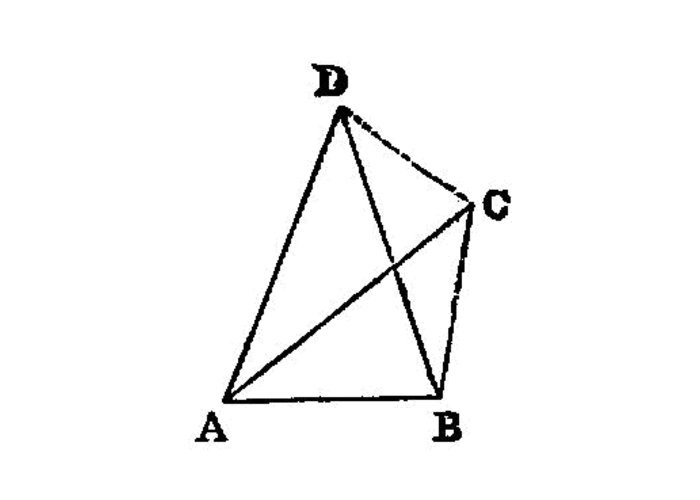
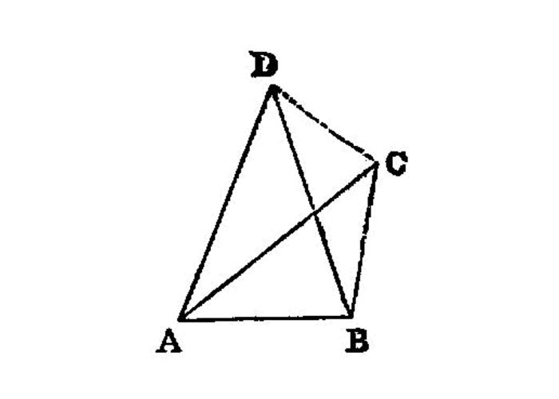

the sides of a triangle are uniquely related to the position of the vertexes
 

{kind=link}
Given two straight lines constructed on a straight line (from its extremities) and meeting in a point, there cannot be constructed on the same straight line (from its extremities), and on the same side of it, two other straight lines meeting in another point and equal to the former two respectively, namely each to that which has the same extremity with it.
===
For, if possible, given two straight lines AC, CB constructed on the straight line AB and meeting at the point C, let two other straight lines AD, DB be constructed on the same straight line AB, on the same side of it, meeting in another point D and equal to the former two respectively, namely each to that which has the same extremity with it, so that CA is equal to DA which has the same extremity A with it, and CB to DB which has the same extremity B with it; and let CD be joined.
Then, since AC is equal to AD,
the angle ACD is also equal to the angle ADC; [I.5] [^I.7:2] therefore the angle ADC is greater than the angle DCB;
therefore the angle CDB is much greater than the angle DCB. [^I.7:3]
Again, since CB is equal to DB,
the angle CDB is also equal to the angle DCB.
But it was also proved much greater than it:
which is impossible.
Therefore etc.
## References
[I.5]: /elem.1.5 “Book 1 - Proposition 5”
## Footnotes
- [^I.7:1]: enunciation note
In an English translation of the enunciation of this proposition it is absolutely necessary, in order to make it intelligible, to insert some words which are not in the Greek. The reason is partly that the Greek enunciation is itself very elliptical, and partly that some words used in it conveyed more meaning than the corresponding words in English do. Particularly is this the case with <foreign lang=”greek”>οὐ συσταθήσονται ἐπί</foreign> <quote>there shall not be constructed upon,</quote> since <foreign lang=”greek”>συνίστασθαι</foreign> is the regular word for constructing a <em>triangle</em> in particular. Thus a Greek would easily understahd <foreign lang=”greek”>συσταθήσονται ἐπί</foreign> as meaning the construction of two lines <em>forming a triangle on</em> a given straight line as base; whereas to <quote>construct two straight lines on a straight line</quote> is not in English sufficiently definite unless we explain that they are drawn from the <em>ends</em> of the straight line to <em>meet</em> at a point. I have had the less hesitation in putting in the words <quote>from its extremities</quote> because they are actually used by Euclid in the somewhat similar enunciation of <a href=”/elem.1.21”>I. 21</a>. How impossible a literal translation into English is, if it is to convey the meaning of the enunciation intelligibly, will be clear from the following attempt to render literally: <quote>On the same straight line there shall not be constructed two other straight lines equal, each to each, to the same two straight lines, (terminating) at different points on the same side, having the same extremities as the original straight lines</quote> (<foreign lang=”greek”>ἐπὶ τῆς αὐτῆς εὐθείας δύο ταῖς αὐταῖς εὐθείαις ἄλλαι δύο εὐθεῖαι ἴσαι ἑκατὲρα ἑκατέρα οὐ συσταθήσονται πρὸς ἄλλῳ καἰ ἄλλῳ σημείῳ ἐπἰ τὰ αὐτὰ μέρη τὰ αὐτὰ πέρατα ἔχουσαι ταῖς ἐξ ἀρχῆς εὐθείαις</foreign>). The reason why Euclid allowed himself to use, in this enunciation, language apparently so obscure is no doubt that the phraseology was traditional and therefore, vague as it was, had a conventional meaning which the contemporary geometer well understood. This is proved, I think, by the occurrence in Aristotle (<xref n=”Aristot. Meteo. 376a.2” from=”ROOT” to=”DITTO”><title>Meteorologica</title> III. 5, 376 a 2 sqq.</xref>) of the very same, evidently technical, expressions. Aristotle is there alluding to the theorem given by Eutocius from Apollonius’ <title>Plane Loci</title> to the effect that, if H, K be two fixed points and M such a variable point that the ratio of MH to MK is a given ratio (not one of equality), the locus of M is a circle. (For an account of this theorem see note on <a href=”/elem.6.3”>VI. 3</a> below.) Now Aristotle says <quote>The lines drawn up from H, K in this ratio cannot be constructed to two different points of the semicircle `A`</quote> (<foreign lang=”greek”>αἰ οὖν ἀπὸ τῶν ΗΚ ἀναγόμεναι γραμμαὶ ἐν τούτῳ τῷ λόγῳ οὐ συσταθήσουται τοῦ ἐφ̓ ᾦ Α ἡμικυκλίου πρὸς ἄλλο καὶ ἄλλο σημεῖον</foreign>). If a paraphrase is allowed instead of a translation adhering as closely as possible to the original, Simson’s is the best that could be found, since the fact that the straight lines form <em>triangles</em> on the same base is really conveyed in the Greek. Simson’s enunciation is, <title>Upon the same base</title>, <em>and on the same side of it</em>, <em>there cannot be two triangles that have their sides which are terminated in one extremity of the base equal to one another</em>, <em>and likewise those which are terminated at the other extremity</em>. Th. Taylor (the translator of Proclus) attacks Simson’s alteration as <quote>indiscreet</quote> and as detracting from the beauty and accuracy of Euclid’s enunciation which are enlarged upon by Proclus in his commentary. Yet, when Taylor says <quote>Whatever difficulty learners may find in conceiving this proposition abstractedly is easily removed by its exposition in the figure,</quote> he really gives his case away. The fact is that Taylor, always enthusiastic over his author, was nettled by Simson’s slighting remarks on Proclus’ comments on the proposition. Simson had said, with reference to Proclus’ explanation of the bearing of the second part of <a href=”/elem.1.5”>I. 5</a> on <a href=”/elem.1.7”>I. 7</a>, that it was not <quote>worth while to relate his trifles at full length,</quote> to which Taylor retorts <quote>But Mr Simson was no philosopher; and therefore the greatest part of these Commentaries must be considered by him as trifles, from the want of a philosophic genius to comprehend their meaning, and a taste superior to that of a <em>mere mathematician</em>, to discover their beauty and elegance.</quote>
[^I.7:2]: equal to the angle It would be natural to insert here the step <quote>but the angle ACD is greater than the angle BCD. [<a href=”/elem.1.c.n.5”>C.N. 5</a>].</quote>
- [^I.7:3]: much greater
literally <quote>greater by much</quote> (<foreign lang=”greek”>πολλῷ μεἰζων</foreign>). Simson and those who follow him translate: <quote><em>much more then</em> is the angle BDC greater than the angle BCD,</quote> but the Greek for this would have to be <foreign lang=”greek”>πολλῷ</foreign> (or <foreign lang=”greek”>πολὺ[ρπαρ ] μᾶλλόν ἐστι…μείζων. πολλῷ μᾶλλον</foreign>, however, though used by Apollonius, is not, apparently, found in Euclid or Archimedes.